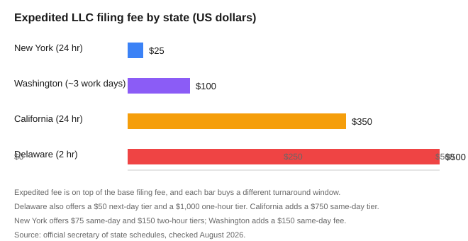

How Long Does It Really Take to Form an LLC? (2026 Timelines)
The short version
TL;DR: Filed online, an LLC usually gets approved the same day or within a day or two. Filed by mail, plan on several business days to a few weeks. The two things that move that number the most are your state and whether you pay for expediting. In the states we checked against official filing offices in August 2026, expedited fees ranged from $25 (New York, 24-hour turnaround) to $500-plus (Delaware and California, for faster windows). Most first-time founders who file online get their approval before they finish setting up a bank account and getting an EIN.How fast is online filing in my state?
Online is the fastest route in nearly every state, and that is the first thing to plan around. California's secretary of state lists online filing as its "fastest service," Delaware pushes you to its online document filing and certificate service, and Florida's Sunbiz system takes e-filings directly. When the state's own website calls online the fast option, that is the clue that mail is the slow one.
The catch is that most states do not publish a firm, guaranteed same-day number for standard online filings. What the offices do publish are expedited windows, and those are a reliable picture of how quickly a filing can move if you want it to. Two states do state it plainly for ordinary turnaround: Washington says expedited filings are "generally processed within three working days" for a $100 fee, and Delaware delays your order if it contains errors, so a clean form is the real speed lever.
What does expedited filing actually cost?
The fees below come from each state's own filing office, pulled in August 2026. Every one is on top of the base filing fee, and each buys a different speed.
| State | Base LLC filing | Expedited options (fee, buy it gets) |
|---|---|---|
| New York | $200 | $25 within 24 hours; $75 same day; $150 within 2 hours |
| Washington | $180 | $100, generally within 3 working days; $150 same-day service |
| Florida | $125 (includes $25 registered agent fee) | E-filing available through Sunbiz; no flat public expedite fee on the fee schedule |
| California | $70 | $350 within 24 hours; $750 same-day; $500 4-hour (drop-off only) |
| Delaware | $90 | Next day $50-$100; same day $100-$200; 2 hours $500; 1 hour $1,000 |

Notice what the pattern does: the faster the guaranteed window, the bigger the fee. Delaware's $1,000 one-hour option is the extreme, but its $50 next-day tier costs less than Washington's $100 three-day tier. If you need speed, read the tier list, not just the headline number, because "expedited" means something different in every state.
Why does standard formation take longer in some states?
Three things push standard processing times out, and they are the same across most states:
- Filing method. Online beats mail almost everywhere. Mail adds postal transit on top of the state's own queue, and once a paper document is opened and keyed in by hand it competes with every other envelope in the pile.
- Name problems and errors. Delaware warns that your processing time will be delayed if your request contains errors. A rejected or corrected filing can restart the clock. Reserving your name first is the cheapest insurance: Delaware holds a name for 120 days for $75, and New York runs a name search when you file.
- The calendar. California's office says it outright: far more requests land at the end of the fiscal and calendar year, and processing for all requests takes longer then. If you can, file early in a quarter rather than in December.
Does New York take longer because of the publication rule?
Yes, and this one is worth flagging separately. New York requires most LLCs to publish a notice in two newspapers for six consecutive weeks and then file a Certificate of Publication with a $50 fee. The state gives you 120 days to finish this after your Articles of Organization are approved, but until it is done your LLC's authority to transact business can be suspended. This is a six-week process running in parallel with the filing itself, so in New York, "how long to form an LLC" is really "how long until I want to legally do business," and that can stretch to a few months. Newspapers set their own fees for the notices, so the cost varies too.
What should I do while my LLC is processing?
However you file, there is useful work that does not depend on state approval:
- Get your EIN. It is free from the IRS and you can apply the moment your LLC is approved, or before if you structure it around your Social Security number. Never pay a third party for one.
- Draft an operating agreement. New York actually requires one within 90 days of filing. Most states do not demand it, but a written agreement is still worth having for how you split profits and make decisions.
- Open a business bank account. You will need the approved LLC documents to do this, so it is a natural next step after approval, not a hold-up you can fix ahead of time.
- Search your name. Run the state's business name search before you file so a conflict does not come back at you as a rejection and delay.
Recap: your formation-timeline checklist
- Check name availability and pull your state's current processing page before you file.
- File online for the fastest standard turnaround.
- Pay for expedited processing only if you have a date-driven reason; compare the tier list, not the headline price.
- Keep your documents clean and complete so nothing bounces back for correction.
- Do the parallel work (EIN, operating agreement, name search) while the state processes.
- In New York, start the newspaper publication clock as soon as your filing is approved.
FAQ
How long does an LLC take to form online?
In most states, an online filing is approved the same day or within a business day or two, though few states publish a firm same-day guarantee for standard filings. If you need it faster, expedited tiers are the honest answer: New York starts at $25 for 24-hour processing.
How long does forming an LLC take by mail?
Mail is the slowest route because postal transit lands on top of the state's own queue. Plan on several business days to a few weeks depending on volume and the state. States that publish turnaround, like Washington, focus their guarantees on expedited rather than mailed standard filings.
Is it worth paying for expedited LLC filing?
Only if you have a reason tied to a date, like signing a lease or a contract. Fees vary a lot by state, from $25 in New York up to $1,000 for Delaware's one-hour tier. For most founders with no deadline, standard online filing is plenty fast.
Which state is fastest for LLC formation?
There is no single fastest state, because most do not publish a comparable same-day standard number. What is verifiable is the expedited ladder: Delaware and California can turn filings around in one to four hours for a premium, while New York charges the least ($25) for a 24-hour window.
Can my LLC name slow down formation?
Yes. A conflict or an error on your documents can get your filing rejected or set back, which restarts the clock. Running the state's name search first and keeping your form clean are the two cheapest ways to avoid a delay.
Sources
- California Secretary of State: Service Options - expedite and turnaround
- California Secretary of State: Current Processing Dates (note on time of year)
- Delaware Division of Corporations: Expedited Services - fees and processing windows
- New York Department of State: Articles of Organization - expedited handling and publication rule
- Washington Secretary of State: Fee Schedule / Expedited Service
- Florida Division of Corporations: LLC Fees - e-filing and fee schedule
- IRS: Employer ID Numbers (free)